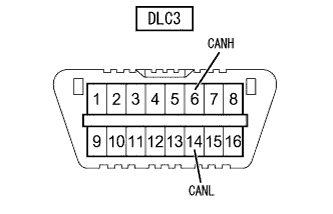
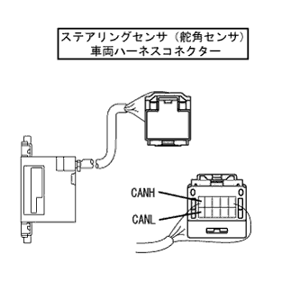
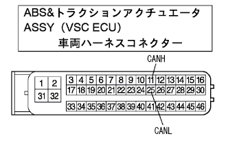

CAN通信システム（ＶＳＣあり） CANバス本線 断線点検(DLC3支線/本線/終端抵抗) |
| 症状 | 疑わしい箇所 |
|---|---|
| DLC3の6(CANH)←→14(CANL)間の抵抗が69Ω以上 |
|
| 手順1 | DLC3点検 |
|  |
IG OFFにして、DLC3の6(CANH)←→14(CANL)間の抵抗を測定する。
| 測定端子 (端子名) | 測定条件 | 測定結果 | 飛び先 |
|---|---|---|---|
| 6(CANH)←→14(CANL) | IG OFF | 70 - 132Ω | A |
| 6(CANH)←→14(CANL) | IG OFF | 132Ω以上 | B |
)から再度トラブルシュートを行う。
|
| ||||
| A | |
| 手順2 | CANバス断線点検（CANバス本線（舵角センサ）） |
|  |
IGスイッチをOFFにして、ステアリングセンサ(舵角センサ)のコネクターをステアリングセンサ(舵角センサ)から切り離す。
SST(トヨタエレクトリカルテスター)を使用して、ステアリングセンサ(舵角センサ)の車両ハーネスコネクター端子間の抵抗を測定する。
| 測定端子 (端子名) | 測定条件 | 基準値 |
|---|---|---|
| 1(CANH)←→6(CANL) | IG OFF | 108 - 132Ω |
|
| ||||
| NG | |
| 手順3 | コネクター接続 |
ステアリングセンサ(舵角センサ)のコネクターをステアリングセンサ(舵角センサ)に接続する。
| 次へ | |
| 手順4 | CANバス断線点検（CANバス本線（舵角センサ-CAN J/C）） |
 |
CAN J/C(アース端子あり面)のCANバス本線コネクターをワイヤリングハーネスコネクタ(CAN J/C)の3から切り離す。
ワイヤリングハーネスコネクタ(CAN J/C)本体のCANバス本線コネクター(舵角センサ)が接続されていた位置の、CANH←→CANL間の抵抗を測定する。
| 端子名 | 測定条件 | 基準値 |
|---|---|---|
| CANH←→CANL | IG OFF | 108 - 132Ω |
|
| ||||
| NG | |
| 手順5 | コネクター接続 |
CAN J/C(アース端子あり面)のCANバス本線コネクターをワイヤリングハーネスコネクタ(CAN J/C)に接続する。
| 次へ | |
| 手順6 | CANバス断線点検（CANバス本線（VSC ECU）） |
|  |
IGスイッチをOFFにして、ABS&トラクションアクチュエータ(VSC ECU)のコネクターをABS&トラクションアクチュエータ(VSC ECU)から切り離す。
SST(トヨタエレクトリカルテスター)を使用して、ABS&トラクションアクチュエータ(VSC ECU)の車両ハーネスコネクター端子間の抵抗を測定する。
| 測定端子 (端子名) | 測定条件 | 基準値 |
|---|---|---|
| 11(CANH)←→25(CANL) | IG OFF | 108 - 132Ω |
|
| ||||
| NG | |
| 手順7 | コネクター接続 |
ABS&トラクションアクチュエータ(VSC ECU)のコネクターをABS&トラクションアクチュエータ(VSC ECU)に接続する。
| 次へ | |
| 手順8 | CANバス断線点検（CANバス本線（VSC ECU-CAN J/C）） |
|
CAN J/C(アース端子あり面)のCANバス本線コネクターをワイヤリングハーネスコネクタ(CAN J/C)の2から切り離す。
ワイヤリングハーネスコネクタ(CAN J/C)本体のCANバス本線コネクター(VSC ECU)が接続されていた位置の、CANH←→CANL間の抵抗を測定する。
| 端子名 | 測定条件 | 基準値 |
|---|---|---|
| CANH←→CANL | IG OFF | 108 - 132Ω |
|
| ||||
| NG | ||
| ||